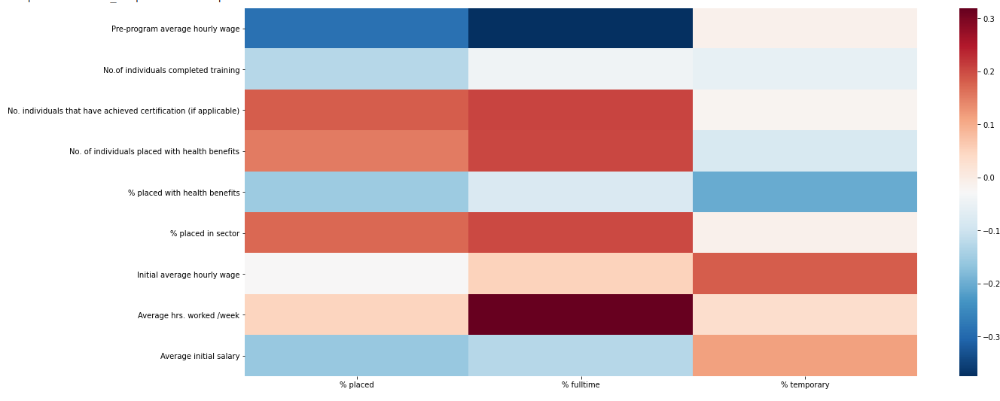
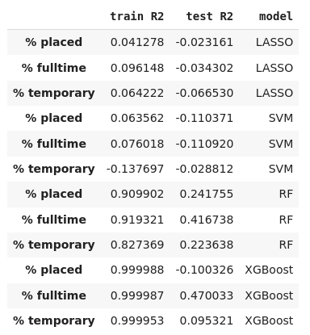
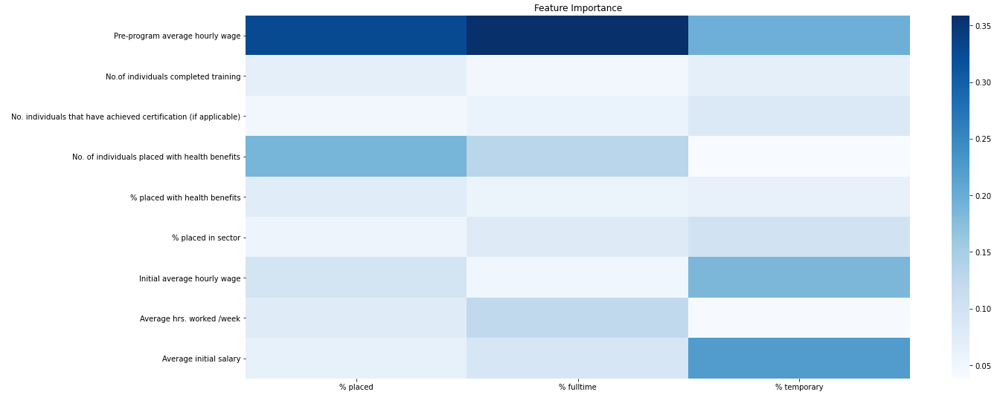
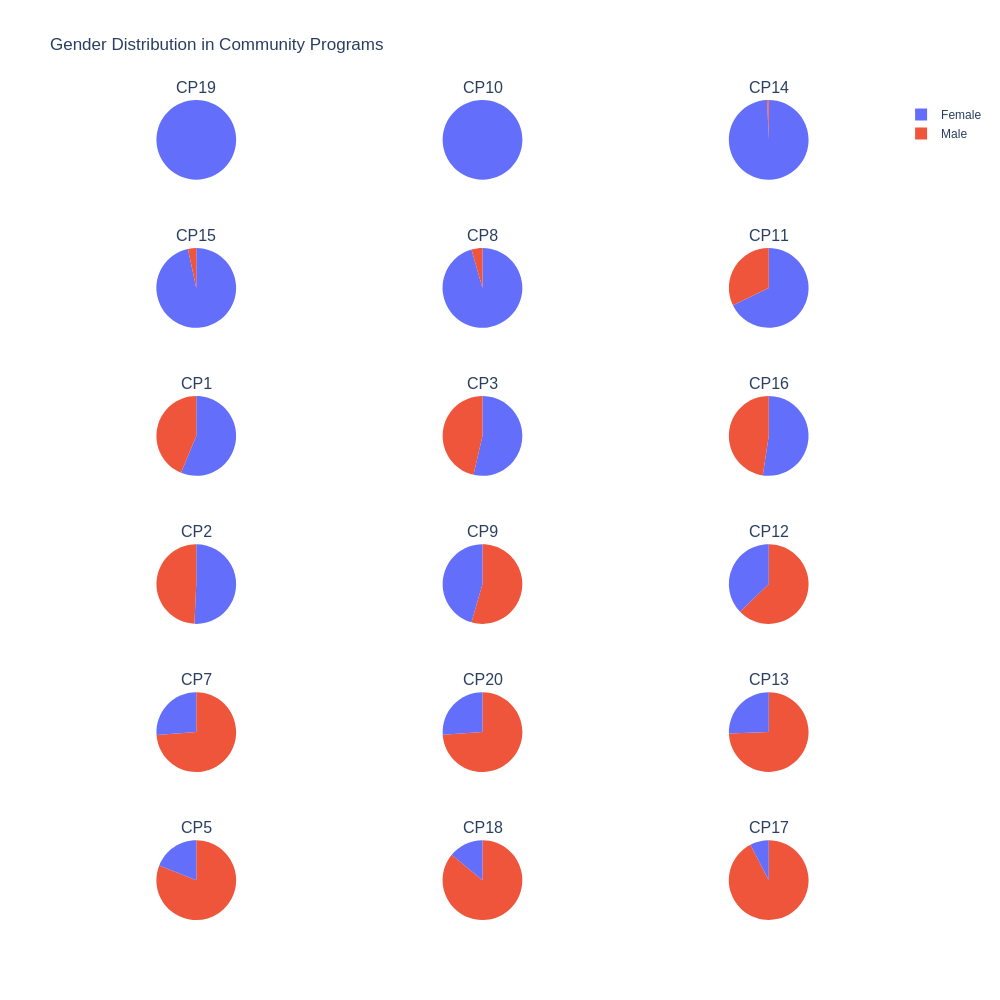
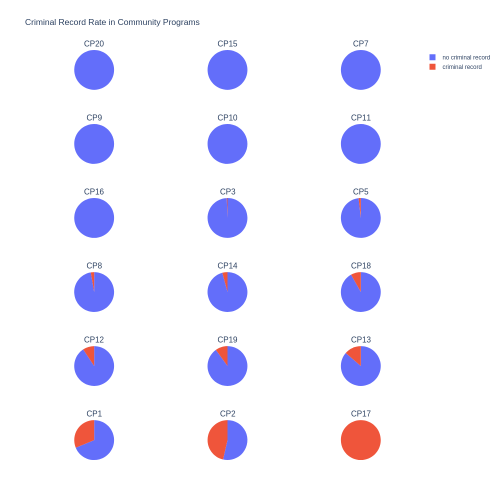
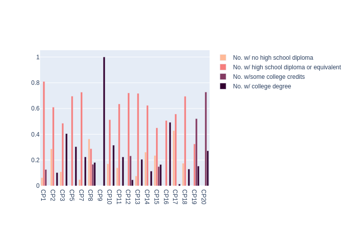
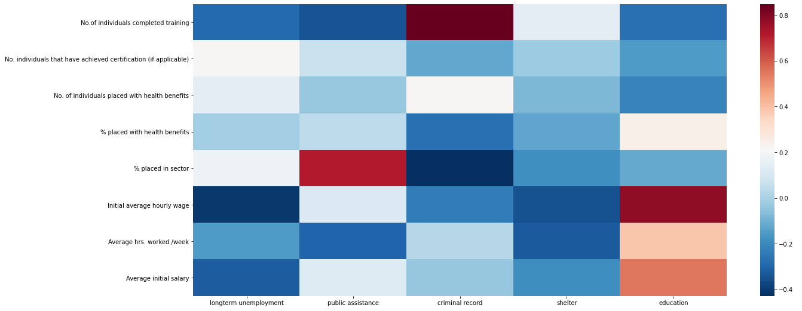
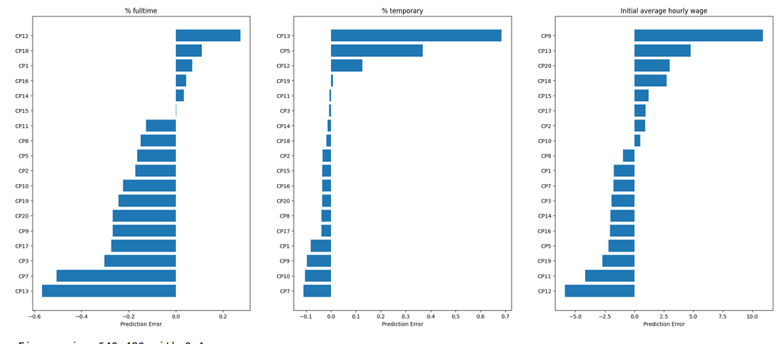

The Robinhood data we were given contained information on the various community partner programs such as "pre-program hourly wage",
"No. of individuals who completed training", "No. of applicants". Shown bellow are what features seemed most important in improving
job placements, visualizations for the programs, and an analysis of how each program is doing.
This work is presented with how the analysis was completed, with the python code omitted.
To determine which community partners perform well, we specifically look at two metrics: employment rate at the end of program and job retention.
In this section we look at the correlation of the features (shown on the left side of the grid bellow) with the labels (%placed, %fulltime, and %temporary). The more *red* means that there is a positive correlation where as the more *blue* means that there is a negative correlation. So in the grid bellow, it appears that "Average hrs worked/week" has a high positive correlation to "% fulltime". In other words, the more "Average hrs worked/week", the higher "%fulltime".
Here the Dataset is split up appropriately to use with various models.
Here the prepared dataset is run with the various models (Lasso, SVM, RF, and XGB).
From the table above, we can see that XGBoost and Random Forests are the two models that perform well on this task.
Here we get the feature importances from the RF model. The feature importance grid allows us to see which features were the most useful in predicting the labels (% placed, % fulltime, %temporary). From this grid, it is seen that "Pre-program average hourly wage" has a high feature importance in relation to the label "% fulltime".
Shown bellow is the gender distribution for the various community programs. The pie charts are sorted from highest % female to least %female. In this visualization it is seen that CP19 and CP10 consist of only females.
Shown bellow is the criminal record distribution for the various community programs. The pie charts are sorted from least % criminal record to highest % criminal record. In this visualization it is seen that CP17 stands out as containing only members with a criminal degree.
Shown bellow is the distribution of the level of eduction for the community programs. In the shades of pink, light pink is those with no high school diploma ranging to dark purple for those with a college degree. From this visualization it is clear that CP9 stands out as having only members with a college degree.
  From the plot of feature importance we found that "% completed training" and "Pre program hourly wage" predicted "% placed" the best.
So shown bellow in the first graph is the "% completed training" in relationship to the "% placed in job" for all the community programs. For
"% fulltime job" each community program is shown in a different color. The colors can be clicked on to select or deselect the program from the
chart. For the community programs, it is clear that those with a higher "% completed training" had a higher "% placed". On the other hand,
there seemed to be less of a correlation between "% completed training" for those placed in temporary jobs.
Finally, we would like to determine how well each of the programs are performing respective to how well the model predicts they should be performing. Prediction Error is used as a metric to determine how much a program's performance differs from the expected performance of the program. This analysis will help Robinhood determine whether they should provide more funds to a particular program if it is performing bellow how it is "expected" to perform.
